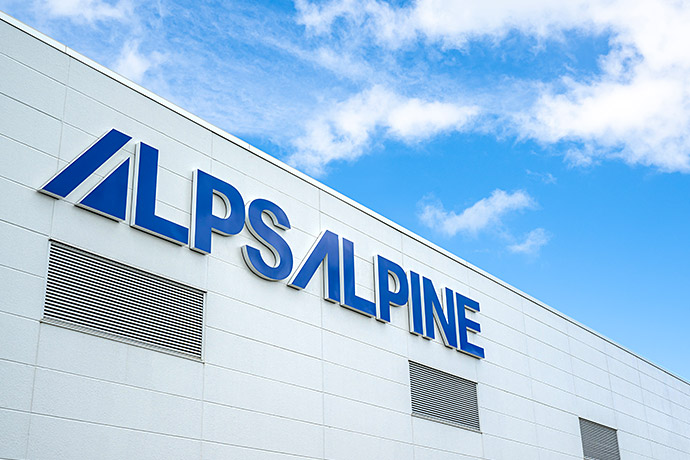
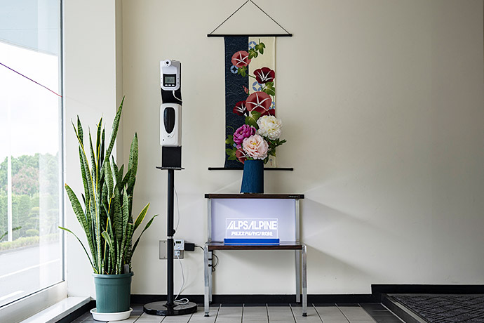
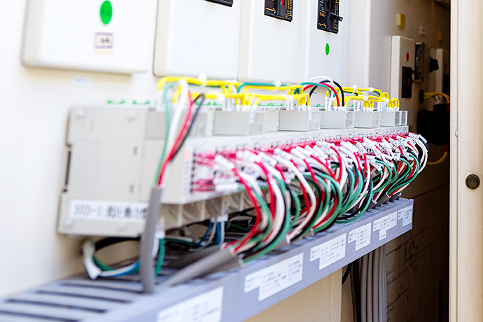
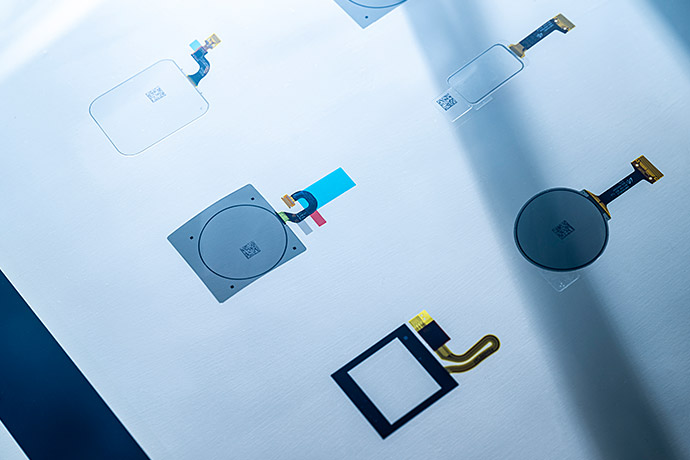
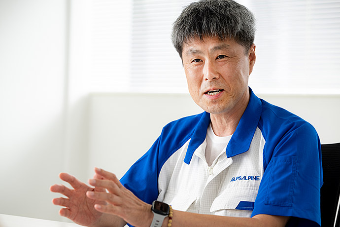
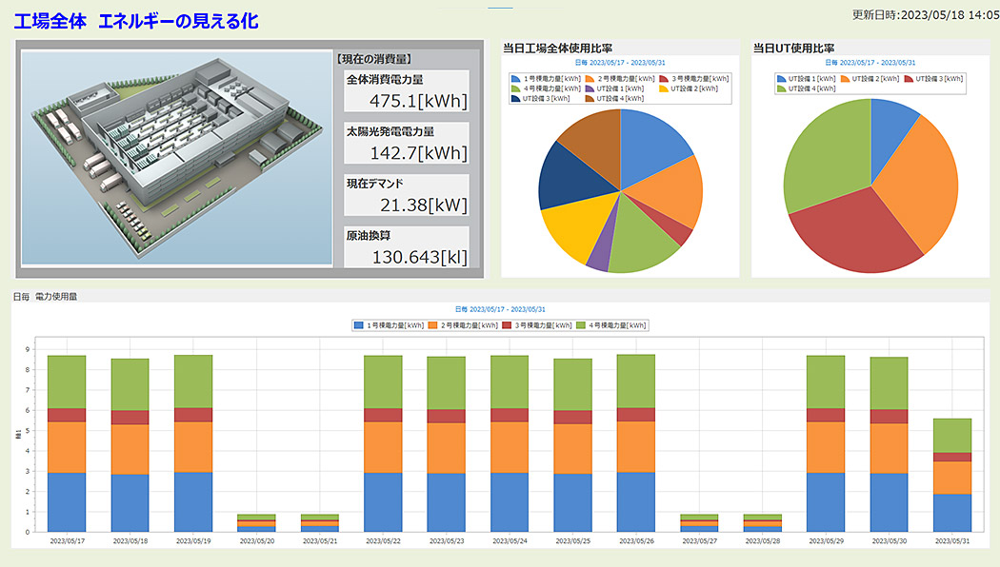
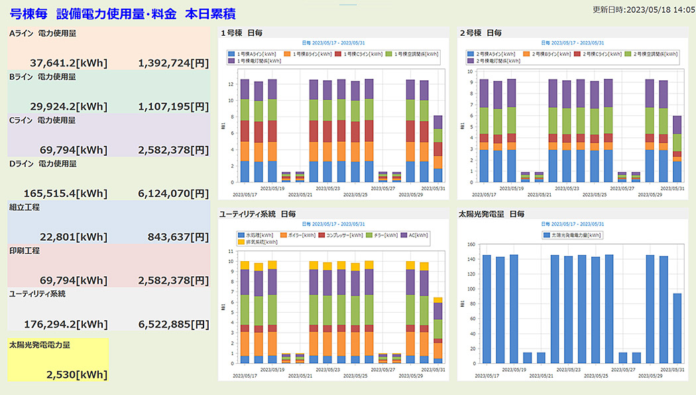
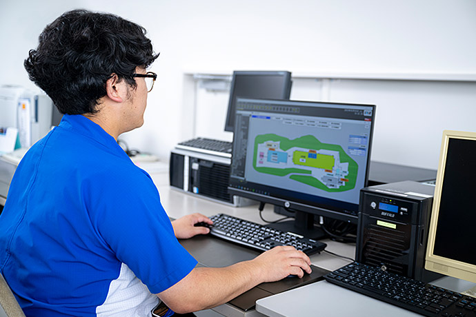
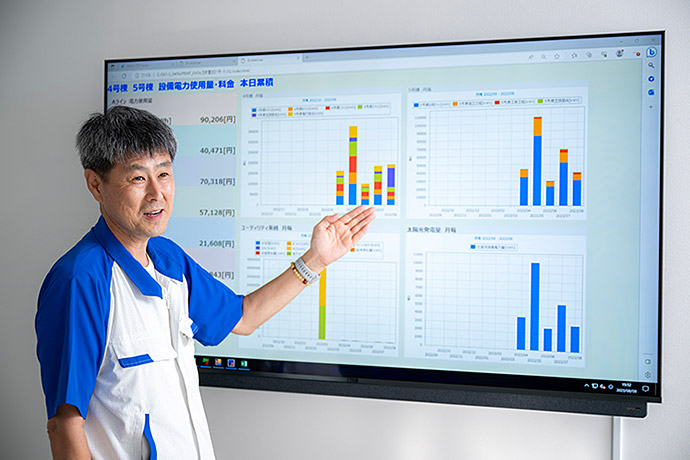

As part of the initiative to achieve organization-wide energy-savings, part of their sustainability goals, electronics manufacturer Alps Alpine has introduced Mitsubishi Electric’s EcoAdviser energy saving support software at its Taira Plant in Iwaki, Fukushima, Japan. This solution was chosen because it adds advanced visualization to the existing SA1-III power management system installed at the facility. The company also plans to leverage EcoAdviser’s AI diagnosis function to identify new opportunities to save energy.



Key Points:
1. EcoAdviser boosts energy saving efforts, without having to replace the existing power management system.
2. Energy-saving ideas can be tested and verified on-site prior to their full implementation.
3. The Taira Plant is now exploring opportunities to leverage EcoAdviser’s built-in AI capabilities in the planning stage of the plan-do-check-act (PDCA) cycle for energy management.
Alps Alpine Co., Ltd., Taira Plant
Alps Alpine manufactures and sells electronic components and car information systems, and has several R&D centers and plants in Japan, mainly located in Miyagi and Fukushima prefectures. One of these is the Taira Plant in Iwaki, Fukushima, which produces touch panels for smartphones, car navigation systems and smart watches.

Alps Alpine’s Taira Plant manufactures touch panels for smartphones and car navigation systems.
Since they expanded their plant in 1990, the Taira Plant has been working to reduce power consumption by 1% per year. In 2020, a working group was formed to support the RE100 initiative*1 – committing the plant to using 100% renewably-sourced electricity in its business operations by 2030. Consequently, cutting power consumption became even more important, representing a significant step towards achieving this sustainability goal. According to the company’s reporting figures for FY2021, 27% of the energy used by the Alps Alpine came from renewable sources such as solar power or, in the case of factories outside of Japan, electricity was purchased from external renewable energy suppliers.
In line with the organization’s overarching efforts, the Taira Plant was already using Mitsubishi Electric’s EcoMonitorPro energy measuring unit alongside its SA1-III power management system from Mitsubishi Electric Systems Service to visualize power consumption.
“Until now, our energy-saving efforts have been mainly focused on operational improvements, but we realized we would need a new approach to make RE100 happen,” says Kenichi Ōhira of Alps Alpine’s General Affairs Section, which is in charge of infrastructure management at the Taira Plant.

Kenichi Ōhira, Onahama General Affairs Section, Alps Alpine Co. Ltd.
*1RE100 stands for Renewable Energy 100%: a global initiative whereby companies commit to using 100% renewably-sourced electricity in their business operations.
Ideas can be tested and verified on-site
Alps Alpine requested proposals from several vendors to help step up its energy-saving efforts at the Taira Plant, finally selecting an application that was based on Mitsubishi Electric’s energy saving support software EcoAdviser. “The deciding factor was that EcoAdviser could be integrated with our existing SA1-III energy management system. As well as being beneficial in terms of investment cost, this could help us streamline the project,” explains Ōhira.

EcoAdviser provides detailed visualizations of energy usage for the whole factory.
Ōhira also saw how using EcoAdviser to display energy information in a clear way to both managers and on-site staff could support continuous improvement activities. “We’ve been working on energy saving for many years and we’ve come a long way. However, it has become harder to come up with new ideas and we needed a solution that would help us avoid hitting a dead end. At the same time as upgrading equipment, we knew we needed a process of ongoing testing and verification to further reduce our energy usage,” says Ōhira.
Ideally, when implementing a rapid cycle of hypothesis formulation and verification, on site workers should take the lead. This requires data and results to be presented in a format that can be interpreted instantly by staff, who may not necessarily have extensive expertise in energy management. The ability to provide a graphical display of relevant information meant that EcoAdviser was exactly what the Taira Plant needed. “Being able to visualize the effect of energy saving activities on operational expenses had a particularly big impact,” says Ōhira.

Graphically visualizing the effects of energy saving activities in terms of cost helps workers understand the impact of actions that are undertaken.
Dashboards that can be created in-house

Kohei Ogino, Onahama General Affairs Section, Alps Alpine Co. Ltd. explains, “Developing our dashboards in-house means we can add new screens as needed.”
When EcoAdviser was introduced at the Taira Plant, the team took on the task of creating new dashboards for data visualization. “Once you start using the software, you quickly realize that you are able to create custom screens to suit your specific processes, without having to outsource the task. This means you can optimize the system so that it can better help achieve your goals,” explains Ōhira. The team at Alps Alpine found that EcoAdviser could be used intuitively, enabling them to create in-house the screens they needed for effective monitoring. As a result, customized dashboards have been added to meet the requirements of the site as needed.
The energy monitoring dashboards provided by EcoAdviser can also be accessed remotely on a mobile device, like a smartphone or a tablet. The Taira Plant is installing a monitoring screen at its entrance area, allowing staff and visitors to see key energy usage insights. As sustainability issues like reducing greenhouse gas emissions become ever more pressing, EcoAdviser provides a way to show visitors how committed the company is to driving such efforts to reduce its environmental impact.
Reducing the training burden
Looking ahead, the EcoAdviser feature that Ōhira is particularly interested in leveraging is the AI diagnosis function. This feature will analyze energy information by cross-referencing production volume data, which they will link to in the future, to automatically identify energy losses.
“We’re not just looking to obtain energy data from our equipment, we also want to understand and leverage this to gain actionable insights. Before, we had to train specialist energy managers to do this, which takes time, but if that task can be performed by AI, it can help free up human resources to focus on other tasks. To put it in terms of the PDCA cycle, we are hoping that the ‘planning’ part can be done by AI,” says Ōhira. There are also plans to link the EcoAdviser software with production information to enable visualization on an energy per-unit basis, supporting the transition of our plant into a smart factory.”

“We would like to use the AI diagnosis function to help automate the ‘planning’ part of the PDCA cycle,” says Ōhira.
Separately from the initiatives at the Taira Plant, Alps Alpine is also planning to introduce EcoAdviser at its Nagaoka R&D Center, which is designated to become a model factory for energy saving. With the knowledge gained at the Taira Plant, there is optimism that the energy saving effects of EcoAdviser will expand throughout the company.